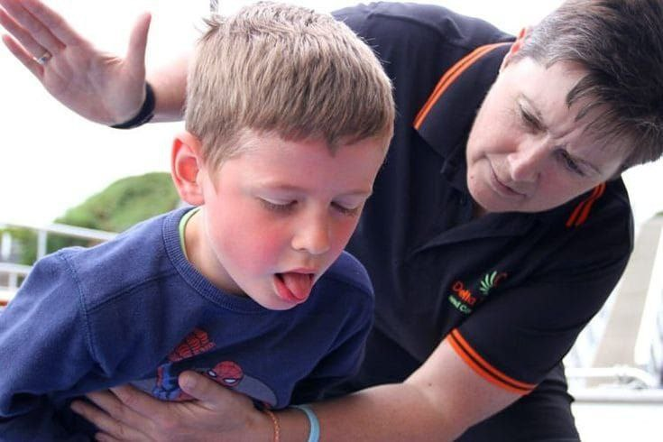
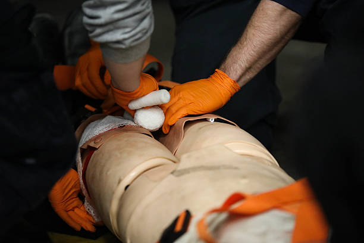
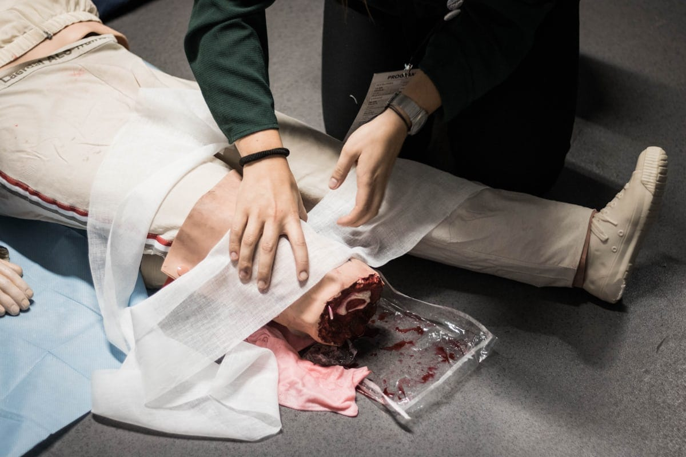

ثواني بتفرق...خليك مستعد
في لحظات الخطر التصرف السريع ممكن ينقذ حياة
مهم تعرف ازاي تتعامل مع الحالات الطارئه لحد ما توصل المساعدة الطيبه
في لحظات الخطر التصرف السريع ممكن ينقذ حياة
مهم تعرف ازاي تتعامل مع الحالات الطارئه لحد ما توصل المساعدة الطيبه
حالات تعتمد
علي سرعة التدخل
رقم الإسعاف في
حالات الطوارئ
من الاصابات يمكن
إسعافها مبدئيا
لتعامل السريع والهادئ مع الحروق يقلل
من خطورتها ويحمي المصاب




يحدث عند إنسداد مجرى التنفس بجسم غريب
تحدث عند توقف القلب عن ضخ الدم
,وهي حالة طوارئ تستدعي التدخل الفوري


يحدث عند فقدان الدم نتيجة جرح او اصابة
يحدث عند ابتلاع ماده ضاره او استنشاقها


يحدث عند تعرض العظام لصدمة قوية او سقوط مفاجئ
يحدث عند انفصال جزء من الجسم نتيجة حادث خطير


كل ثانية قيمة وقت الطوارئ المعرفة الصحيحة قد
تنقذ حياة قبل وصول الإسعاف